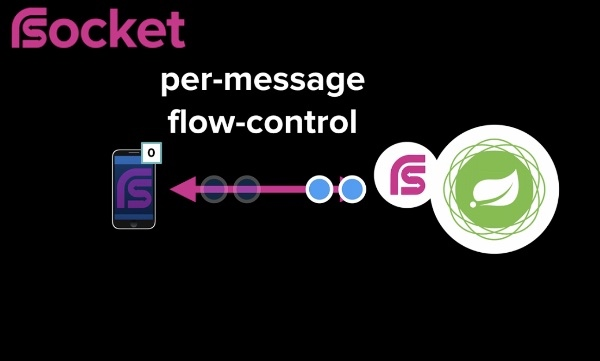
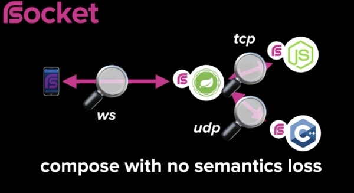

Announced at the SpringOne Platform conference in Washington DC, RSocket is a new layer 7, language-agnostic application network protocol. It is a bi-directional, multiplexed, message-based, binary protocol based on Reactive Streams back pressure. It has been developed by engineers from Facebook, Netifi and Pivotal amongst others, with implementations available in Java, JavaScript, C++, and Kotlin.
The protocol is specifically designed to work well with Reactive-style applications, which are fundamentally non-blocking and often (but not always) paired with asynchronous behaviour. The use of Reactive back pressure, the idea that a publisher cannot send data to a subscriber until that subscriber has indicated that it is ready, is a key differentiator from "async".
"I personally believe," Cloud Foundry Java Experience Lead Ben Hale said, "Reactive programming is the next frontier in Java for high efficiency applications." There are, Hale said, two major roadblocks to Reactive programing - data access, and networking. RSocket is intended to address the latter problem, whilst R2DBC is intended to address the former.
In a microservice-style application HTTP is widely used as the communication protocol. Setting out the reasoning behind developing the new protocol, Pivotal's Project Reactor lead Stephane Maldini pointed out that HTTP was designed for a very different world.
We have iPhones and Android phones, we listen for notifications so we don't necessarily request something and get a reply, we get multiple replies without necessarily interacting with the device. We also use Smart watches when we exercise which interact with a back-end server giving us statistics. We have Smart assistants interacting with a back-end server. And all these interaction models are part of what we could call a connected experience. HTTP wasn't really designed for this.
One significant issue with HTTP, Maldini argued, is that it puts all the onus on the client to handle different kinds of errors with retry logic, timeouts, circuit breakers and so on. Applications built using a Reactive architecture can make efficiency gains and scale well, but, Maldini argued, "Reactive support stops at the application boundary."
One way that RSocket differs from HTTP is that it defines four interaction models:
- Fire-and-Forget: an optimization of request/response that is useful when a response is not needed, such as for non-critical event logging.
- Request/Response: when you send one request and receive one response, exactly like HTTP. Even here though, the protocol has advantages over HTTP in that it is asynchronous and multiplexed.
- Request/Stream: analogous to Request/Response returning a collection, the collection is streamed back instead of querying until complete, so for example send a bank account number, respond with a real-time stream of account transactions.
- Channel: a bi-directional stream of messages allowing for arbitrary interaction models.
Being message-based means that the protocol can support multiplexing on a single connection. In addition, like TCP, it is truly bi-directional, such that once a client initiates a connection to a server both parties in the connection become equivalent to one another - in essence, the server can request data from the client.
RSocket also supports flow-control on a per-message basis. During the keynote, Facebook engineer Steve Gury stated that:
When you send a message you also specify how many responses you are able to satisfy, and the server must satisfy that constraint, but when I've finished processing those responses I can ask for more. RSocket also works across the chain, so if you link multiple RSocket connections the flow control will work end to end.

In essence, as Hale stated in a follow-on session later in the day, the problem that RSocket solves is cross-process back pressure, that is, back pressure over a network.
I can guarantee that I never call for more data than I can handle inside of a process, but what happens when I have to make a call to another Microservice in my service mesh. How do I guarantee that it doesn't materialise a whole bunch of data and that it doesn't attempt to send me all of that data.
RSocket is transport-agnostic supporting TCP, WebSocket and Aeron UDP, and supporting mixed transport protocols with no semantic loss - both the back pressure and flow control will continue to work.

It also supports connection resumption. When you establish an RSocket connection you can specify the ID of the previous connection, and if the server still has the stream in memory you can resume the consumption of your stream.
During his aforementioned talk, Hale gave considerably more detail about how the protocol works. As noted above, it is a message-driven binary protocol. "We have this idea that given a network connection, a requester-responder interaction is broken down into a discrete set of frames," Hales said. "Each one of these frames encapsulates a message of some kind." The framing is binary, rather than human-readable like JSON or XML, giving significant efficiencies for machine-to-machine communication. As with all messaging protocols, payloads are just streams of bytes so can be anything you want, including XML or JSON.
At Facebook, RSocket is used is for a service called LiveServer, which is responsible for responding to a live query which can be thought of as a GraphQL subscription. The server responds with the data but also a stream of future updates.